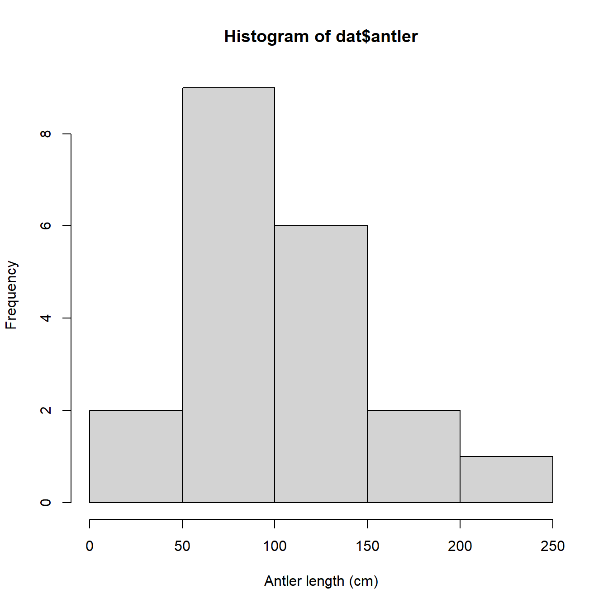

2.4 A first R session
One of the best ways to get a feel for R is to step through a typical R workflow. We are going to analyze a classic dataset from evolutionary biology that contains data on the body size and antler size of many species of deer (family Cervidae). The data were collected by Stephen Jay Gould (Gould 1974) to investigate the reason for the massive antler size in an extinct mammal, the Irish elk (Megaloceros giganteus), seen below18. Gould was interested in whether the massive antlers might have resulted from runaway sexual selection or were simply the result of allometric growth. The Irish elk lived across northern Eurasia during the Pleistocene epoch, until about 7700 years ago. Adults stood around 2.1 m high at the shoulder and males bore antlers that could reach up to 3.65 m (\(\approx\) 12 ft) across. Body mass of adult males is estimated to have ranged from 450 to 700 kg (990 to 1540 lb). Irish elk were on average larger than the largest extant cervid, the moose (Alces alces).

2.4.1 Import data
First, load the data into R. The data are contained in the text file elk_data_2021-01-21.csv. Download this file and save it on your computer. If you want to save some time later, save the data file in your R home directory. This is the default folder where R and RStudio will look for files. The R home directory depends on your operating system:
- Windows users: the home directory is your “Documents” folder. The address of this folder is “C:/Users/username/Documents”, where “username” is your Windows logon name. You can get to your Documents folder by opening Windows Explorer (Win-E) and double-clicking “Documents”.
- Mac users: the home directory is your home folder. The address of this folder is “/Users/username” (where username is your username) or “~/”. You can open your home folder by pressing CMD-SHIFT-H, or by using the Go pulldown menu from the menu bar.
- Note for Mac users: When you download a .csv file in MacOS, your computer might open it in a program called “Numbers”. This is a Mac-specific spreadsheet program. When you close the program it is possible to inadvertently save the data file as a new file in .numbers format, which is not readable by R. If you do this, your datafile will become “elk_data_2021-01-21.numbers”, and you will not be able to open it in R or RStudio. .numbers is a different file format than .csv. A .numbers file has the same file name, but it has a different file extension and so it is not the same as a .csv19.
Once you save the data file on your computer, you can import it to RStudio in several ways. Notice that in both methods shown here, nothing is printed to the console after a successful import. Instead, the function reads the CSV file and saves the data to an object that we are calling dat.
2.4.1.1 Method 1: Import in RStudio using File–Import Dataset
In RStudio, click on File–Import Dataset–From Text (base).

Navigate to the data file just as you would if opening a file in any other program. Click Open.

In the dialog box that pops up, change the name of the incoming dataset to “dat”. This is what we will call the dataset when working with it in R. Make sure that the “Strings as factors” box is NOT checked.

Click Import. RStudio will import the data for you and save it in the workspace as an object called “dat”. Notice that a command like dat <- read.csv("~/elk_data_2021-01-21.csv") was run in the console. This command is what RStudio used internally to import the data. If you want to know more, look at method 2 below.
After you click Import, RStudio will import the data and display it for you. The image below shows what that looks like. Notice that RStudio automatically generated the code to import the data and executed it (red arrow); that the dataset is listed in the “Environment” box in the top right (blue arrow), and the dataset is displayed in the top left (green arrow).

Once the dataset is imported, you can view it in the console by typing its name and pressing ENTER. Each method above saved the dataset to an object named dat. Obviously, this is short for “data”20. However, we didn’t call our dataset “data” because data() is already the name of an R function and we don’t want to accidentally overwrite that function.
2.4.1.2 Method 2: Import from command line
You can also import files from the command line directly. This option is preferred by users who need to import files automatically, or who aren’t using RStudio. To use this method, you need to know the name of the folder where the data file is stored. If the data file is in your home directory (see previous section), the command is simple:
dat <- read.csv("elk_data_2021-01-21.csv")The command above will look in your home directory for a file with the filename you specify. The filename must match exactly, including capitalization. For convenience I usually split the command up into two, with one specifying the name and the other importing the file:
dat.name <- "elk_data_2021-01-21.csv"
dat <- read.csv(dat.name)If the data file is NOT in your home directory, you need to tell R which folder to look in. In the example below, I put the file on my Windows desktop21 (C:/Users/ngreen62/Desktop)22. This folder address is provided to R as a character string, and that string is combined with the file name using the paste() command.
use.fold <- "C:/Users/ngreen62/Desktop"
dat <- read.csv(paste(use.fold, dat.name, sep="/"))Notice that the folder address above uses front-slashes (/). Windows uses back-slashes (“\”) in folder addresses, while R requires forward slashes (“/”). Mac and Linux already use front-slashes. If you are a Windows user, you will need to change the back-slashes to front-slashes in the folder address.
Once you have imported the data, you can type the name of the dataset into the console and press ENTER to view it:
dat## height antler species
## 1 69.3 24.8 unknown
## 2 69.3 34.5 unknown
## 3 87.7 53.5 unknown
## 4 99.8 58.3 unknown
## 5 69.3 61.2 unknown
## 6 84.1 67.3 unknown
## 7 89.4 72.2 unknown
## 8 91.9 81.5 unknown
## 9 116.6 86.6 unknown
## 10 104.7 91.4 unknown
## 11 129.9 99.3 unknown
## 12 94.6 101.5 unknown
## 13 115.5 107.8 unknown
## 14 138.4 115.7 unknown
## 15 138.4 123.3 unknown
## 16 127.5 128.5 unknown
## 17 175.1 131.4 alces
## 18 164.3 162.6 unknown
## 19 204.5 197.5 alces
## 20 183.6 239.1 megaloceros2.4.2 Explore and visualize data
Before we do anything, we should look at the dataset. We have two continuous variables, height and antler, so the natural way to examine their relationship is with a scatterplot. Scatterplots are made by the plot() function. By default, the first argument to plot() contains the x values, and the second contains the y values. The values are accessed from the data frame dat using the $ operator. The command below also uses the arguments xlab and ylab to set x-axis and y-axis labels. Notice that R will set the limits of the graph according to the range of each variable; we’ll go over how to set those limits later on.
plot(dat$height, dat$antler,
xlab="Shoulder height (cm)",
ylab="Antler length (cm)")
We might also be interested in how the data are distributed. This will be important later because the data need to meet particular assumptions for our statistical analysis. The simplest way to view a data distribution is with a histogram, hist().
hist(dat$antler, xlab="Antler length (cm)")We could also try a probability density function (PDF) plot, or plotting the empirical cumulative distribution function (ECDF). Histograms, PDF plots, and ECDF plots are just different ways of displaying how the data are spread out. In the figure below, we use the function par() to set some graphical parameters (including a 1 row \(\times\) 3 column layout using argument mfrow). We also saved the text string “Antler length (cm)” as an object (use.xlab), and then used it in each of the plotting commands so we didn’t have to type the same thing over and over.
use.xlab <- "Antler length (cm)"
par(mfrow=c(1,3))
hist(dat$antler, xlab=use.xlab)
plot(density(dat$antler, from=0), xlab=use.xlab)
plot(ecdf(dat$antler), xlab=use.xlab)
All three plots above show that the antler lengths probably follow a normal distribution. Notice how the PDF plot (center) looks like a very smoothed version of the histogram. This is because it basically is. A histogram shows how many observations fall into discrete ranges, or bins. The PDF of a distribution shows how likely every possible value is relative to other values. That is, the PDF is basically the heights of a histogram with bin widths = 0. The rightmost plot, the ECDF, shows what percentage of observations in a distribution are equal to or less than each value (this is the “cumulative” part of ECDF). If we wanted, we could estimate the actual CDF of the distribution. The PDF and CDF are intimately related because the PDF is the derivative of the CDF (or, the CDF is the integral of the PDF). This is why the y-axis values on a PDF plot look so weird: they are the instantaneous rate of change in the CDF at each value.
Don’t worry if that doesn’t make a lot of sense right now. We will explore data distributions some more later in the course, both in practical terms and in the language of PDFs and CDFs.
2.4.3 Transform data
The plots above show that the antler lengths probably follow a normal distribution, which is convenient for statistical analysis. In fact, many statistical methods were developed to work only with normally distributed data! But, there is a problem. The normal distribution can take on any real value. In statistical jargon, we say that the normal distribution is supported on the interval [\(-\infty\), \(+\infty\)]. A normally distributed variable can thus take on negative values. Does this make sense for antler lengths? Or for any kind of length? Of course not.
One way to avoid the awkwardness of a statistical model that predicts negative lengths is to log-transform the variables. This ensures that any value predicted by the model must be positive. We are actually going to log-transform both the response and predictor variable for reasons that will become clear in the next step. In R this can be done with the log() command:
dat$logy <- log(dat$antler)
dat$logx <- log(dat$height)Notice that we used the natural logarithm (base e) rather than log10. This will matter later when we plot the model and its predictions.
2.4.4 Analyze data
Now that we have log-transformed data, we should plot them to help us decide on an appropriate statistical model. We can make a new version of the scatterplot from earlier. Notice that the axes are now on a different scale, the logarithm of the original values. So, the x-coordinates around 4.9 on the log scale correspond to shoulder heights of \(e^{4.9}\), or about 134.3 cm.
par(mfrow=c(1,1)) # reset plot layout
plot(dat$logx, dat$logy,
xlab="Log Shoulder height (cm)",
ylab="Log Antler length (cm)")It looks like antler length and shoulder height have a linear relationship on the log scale. That is exactly what we are going to fit, but we need to understand what this represents. The linear model we can fit with the log-transformed data is:
\[\log{\left(Y\right)=\beta_0+\beta_1\log{\left(X\right)}+\varepsilon}\]
In this equation:
- Y is the response or dependent variable (antler length)
- X is the explanatory or independent variable (shoulder height)
- \(\beta_0\) is the y-intercept (i.e., the value of \(log(Y)\) when \(log(X) = 0\)). Called “beta zero” or “beta naught”.
- \(\beta_1\) is the slope or regression coefficient (i.e., the change in \(log(Y)\) per unit change in \(log(X)\)). If \(log(X)\) increases by 1, then \(log(Y)\) increases by \(\beta_1\). Called “beta one”.
- \(\varepsilon\) is a random error term that describes residual variation not explained by the model. Called “epsilon”. In a linear regression model, residuals are identically and independently distributed (i.i.d.) according to a normal distribution with mean 0 and variance \(\sigma^2\). Almost all statistical models assume i.i.d. residuals, which means that errors all come from the same distribution, and are completely independent of each other.
If we wanted to estimate actual antler lengths rather than the logarithm of antler lengths, we have to exponentiate both sides. Ignoring the residuals term for the moment, this gives us:
\[Y=e^{\beta_0}X^{\beta_1}\]
Which is more commonly written as a power law. Power laws are very common in anatomy and morphology. The equation below is the usual form of a power law, where the coefficient a = \(e^{\beta_0}\).
\[Y=aX^b\]
The linear model is fit using the lm() function. Notice that the model terms are specified as a “formula”. The response variable is on the left, then a ~, then the predictor variable (or variables) on the right. The model is saved to an object called mod1, short for “model 1”.
mod1 <- lm(logy~logx, data=dat)We can view the results using the summary() command on the output:
summary(mod1)##
## Call:
## lm(formula = logy ~ logx, data = dat)
##
## Residuals:
## Min 1Q Median 3Q Max
## -0.55752 -0.12729 0.00769 0.15201 0.38060
##
## Coefficients:
## Estimate Std. Error t value Pr(>|t|)
## (Intercept) -2.6476 0.7918 -3.344 0.00361 **
## logx 1.5138 0.1675 9.037 4.14e-08 ***
## ---
## Signif. codes: 0 '***' 0.001 '**' 0.01 '*' 0.05 '.' 0.1 ' ' 1
##
## Residual standard error: 0.24 on 18 degrees of freedom
## Multiple R-squared: 0.8194, Adjusted R-squared: 0.8094
## F-statistic: 81.67 on 1 and 18 DF, p-value: 4.141e-08This tells us that the intercept and slope are statistically significant (P < 0.05 for both terms), and that the model explains about 81% of variation in antler length (adjusted R2 = 0.8094). That’s pretty good.
What if we had not transformed the data? Then we would have had to fit the power law directly. This is possible in R using the nls() function (nonlinear least squares), but this route is usually harder than using lm() on transformed data. Here is the equivalent model fit using the nonlinear model function nls():
mod2 <- nls(antler~a*height^b, data=dat,
start=list(a=exp(-2.6), b=1.51))
summary(mod2)##
## Formula: antler ~ a * height^b
##
## Parameters:
## Estimate Std. Error t value Pr(>|t|)
## a 0.13219 0.09861 1.341 0.197
## b 1.38863 0.14929 9.302 2.69e-08 ***
## ---
## Signif. codes: 0 '***' 0.001 '**' 0.01 '*' 0.05 '.' 0.1 ' ' 1
##
## Residual standard error: 21.49 on 18 degrees of freedom
##
## Number of iterations to convergence: 5
## Achieved convergence tolerance: 8.994e-07Fitting nonlinear models in R can be tricky because you usually need to supply starting values for the algorithm to try. In the example above I used the estimates from the linearized version of the model as starting values. If the starting values are too far away from the “correct” values then the model may not converge, leaving you without a model fit. Even if the model does converge, there is no guarantee that the fitted parameters are correct because there might be multiple stable solutions. Furthermore, some of the common postprocessing done on fitted models such as multiple inference, model comparison, prediction, and error propagation are harder to do in R with nonlinear models (nls() outputs) than with linear models (lm() outputs). We’ll explore how to do this later in the course, but for now we will stick with the linearized fit.
2.4.5 Write out results
Now that we have successfully fit a statistical model, we need to report our findings. Reporting model coefficients is easy enough: just put them into a table.
Table 1. Log-transformed antler length (cm) varied as a linear function of log-transformed shoulder height (cm). Model R2 = 0.8094. Parameters shown are estimate \(\pm\) standard error (SE); t is t-statistic, and P is P-value.
| Parameter | Estimate \(\pm\) SE | t | P |
|---|---|---|---|
| \(Log\left(\beta_0\right)\) | -2.65 \(\pm\) 0.79 | -3.34 | 0.0036 |
| \(\beta_1\) | 1.51 \(\pm\) 0.17 | 9.04 | <0.0001 |
We might also want to present the fitted model in context with the original data. In R this is done using predicted values and their associated uncertainties. Instead of presenting predicted values for the original data, it is common practice to present predicted values for a smooth set of predictor values within the domain of the original data. We can see the minimum and maximum values of the predictor with range(). Then, we use seq() to generate a regular sequence between those limits. Finally, calculate the predictions using predict(), with argument se.fit to get the uncertainty associated with the predictions.
n <- 100
new.x <- seq(from=min(dat$logx), to=max(dat$logx), length=n)
new.x2 <- exp(new.x) # needed for plot later
pred <- predict(mod1,
newdata=data.frame(logx=new.x),
se.fit=TRUE)The last piece we will need is the 95% confidence limits of the predictions. We can calculate these from the predicted means and SE in object pred. Because the predictions are on the logarithmic scale, we will back-transform the predictions. We can get the back-transformed predictions by exponentiating the predicted mean, and by requesting quantiles from the lognormal distribution with function qlnorm(). To get the 95% CI, we request the 2.5% and 97.5% percentiles (i.e., 0.025 and 0.975 quantiles) because the interval between them covers 95% of the distribution.
mn <- exp(pred$fit)
lo <- qlnorm(0.025, pred$fit, pred$se.fit)
hi <- qlnorm(0.975, pred$fit, pred$se.fit)
# not run: alternative (sometimes more reliable)
# way to get predicted mean/median
# mn <- qlnorm(0.5, pred$fit, pred$se.fit)Now we have all the pieces we need to put together a polished, manuscript-quality figure with the original data and the model predictions. We will use the par() command again to set some additional graphics options.
par(mfrow=c(1,1), # 1 x 1 layout
mar=c(4.1, 4.1, 1.1, 1.1), # margin sizes (clockwise from bottom)
bty="n", # no box around plot
las=1, # axis labels in reading direction
lend=1, # flat line ends
cex.lab=1.3, # axis title size
cex.axis=1.2) # axis label size
plot(dat$height, dat$antler, type="n",
xlab="Shoulder height (cm)",
ylab="Antler length (cm)",
ylim=c(0, 300))
points(new.x2, lo, type="l", lwd=3, col="red", lty=2)
points(new.x2, hi, type="l", lwd=3, col="red", lty=2)
points(new.x2, mn, type="l", lwd=3, col="red")
points(dat$height, dat$antler, cex=1.3, pch=16)There are some other graphics options we could set, but we’ll save those for later in the course. This figure is clean and spare, with a very high data to ink ratio…just the sort of figure that we want to represent our work (Tufte 2001).
Just for fun, let’s label the original object of our investigation, the Irish elk. We can add a text label and a pointer with the commands text() and segments(). This can require some fiddling to get the coordinates just right. First we’ll use function locator() to find some appropriate coordinates. To use locator(), first run that command in the console. Then, click the points on the graph where you want coordinates. Then, right-click and select “Stop”. The coordinates you clicked will be printed to the console.
# not run:
#locator()
# click on the figure where you want arrow ends to be
# $x
# [1] 161.7056 177.5281
# $y
# [1] 257.0432 244.5633Then, use the coordinates you found and add the pointer and text. Of course you could do this in another program like Powerpoint, but keeping everything in R can streamline your workflow.
# add pointer and genus name:
segments(161.7, 257.0, 180, 242)
text(160, 260,
expression(italic(Megaloceros)),
adj=1, # right-aligned at point
cex=1.3) # text size
2.4.6 Save your work?
Now that we are done with the analysis, we can save our work. If you have the code in an R script, you can just save the script and rerun it whenever you want. The results and outputs will be exactly the same next time you open a new R console and run the script23. R scripts have the extension .r or .R.
If you want to save the actual R workspace, you can do this in the console with the save.image() command. By default, this command saves the workspace in your home directory. R workspaces have the extension .RData.
save.image("elk_analysis_2021-06-14.RData")The resulting file is the R workspace created by running the script. If you open it, a new R instance will open that contains the same objects and command history as the original. This is more useful in situations involving calculations that take a long time to run, or when the outputs are more complicated than simple text files or images. Notice that the workspace was saved with an informative name and a date. This is important because without the user-supplied name, R will save the workspace with a generic name…potentially overwriting a previously saved workspace!
2.4.7 What’s next?
This section was designed to demonstrate a typical R workflow with straightforward examples and good coding practices. In the next section, we’ll take a closer look at how R works. Some the material in the upcoming sections was already demonstrated, but not explained, on this page.